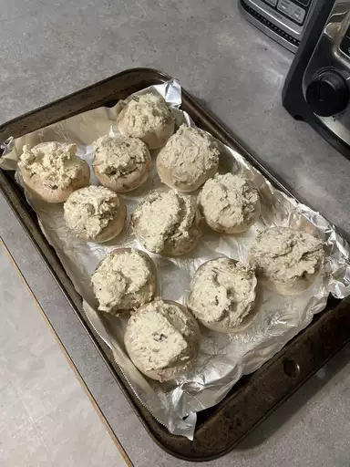

Stuffed Cream Cheese Mushroom

Description
An appetizer that kick. Always a party favorite when we make them. I usually double the recipe.
Ingredients
- Cooking spray
- 12 whole fresh mushroom, tough ends trimmed
- 1 teaspoon vegetable oil
- 1 teaspoon minced garlic
- 1 (8 ounce) package cream cheese, softened
- 1/4 cup grated parmesan cheese
- 1/4 teaspoon ground black pepper
- 1/4 teaspoon onion powder
- 1/4 teaspoon cayenne pepper
Steps
- Step 1: Preheat the oven to 350 degrees F (175 degrees C). Prepare a baking sheet with cooking spray.
- Step 2: Clean mushroom with a damp paper towel. Carefully break stems from mushrooms. Finely chop stems and set caps aside.
- Step 3: Heat oil in a large skillet over medium heat. Fry chopped mushroom stems and garlic in hot oil until any moisture has disappeared, taking care not to burn the garlic, 3 to 5 minutes. Spread mushrooms mixture into a bowl to cool completely, about 10 minutes.
- Step 4: Stir cream cheese, Parmesan cheese, black pepper, onion powder, and cayenne pepper into the cooled mushroom mixture until very thick and completely mixed. Use a small spoon to fill each mushroom cap with a generous amount of stuffing. Arrange stuffed mushrooms on the prepared cookie sheet.
- Step 5: Bake in the preheated oven until piping hot and liquid starts to form under each cap, about 20 minutes.
Return To Main Page